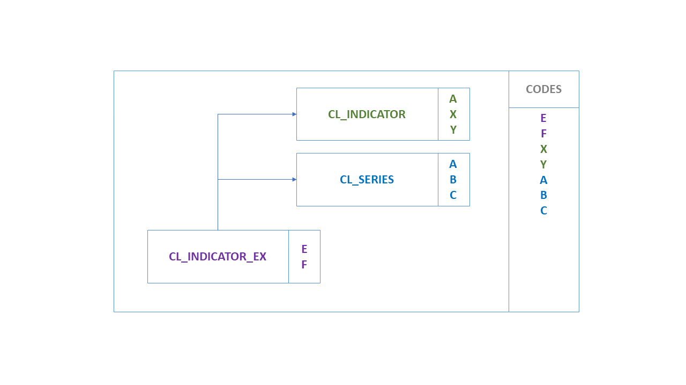
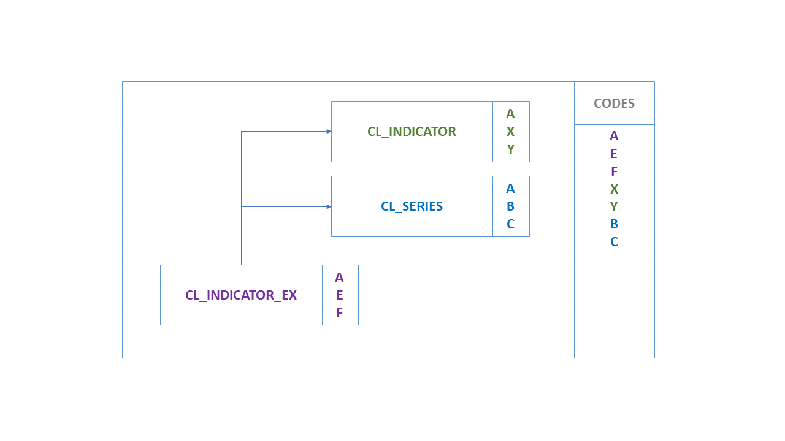
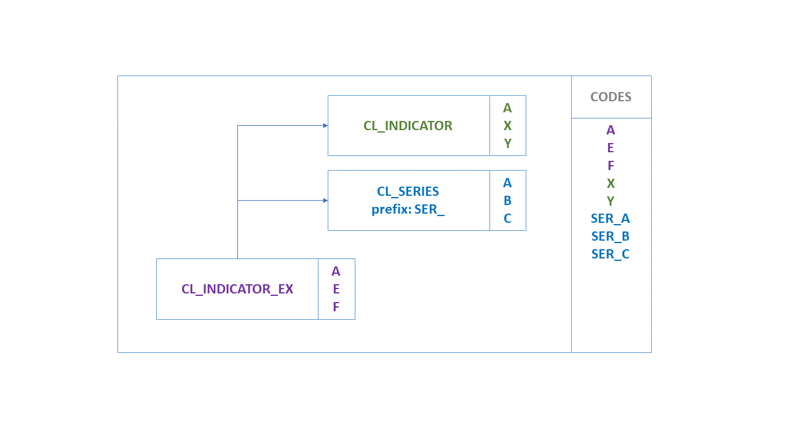
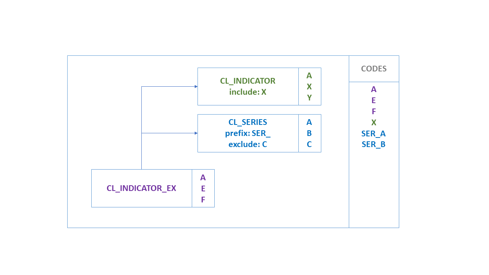
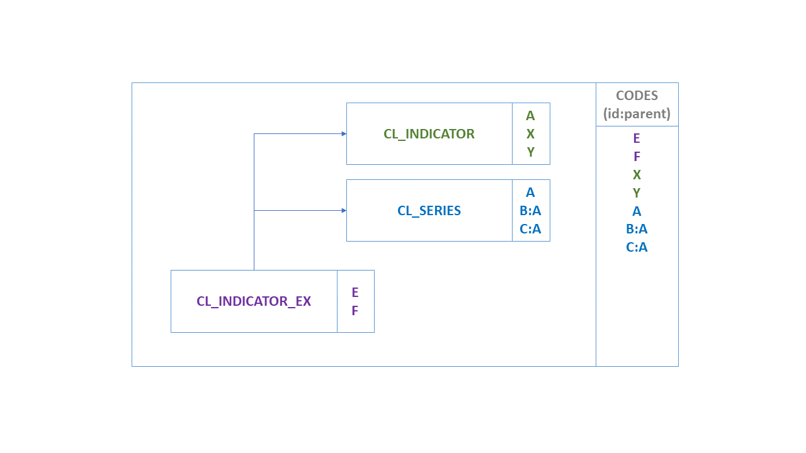
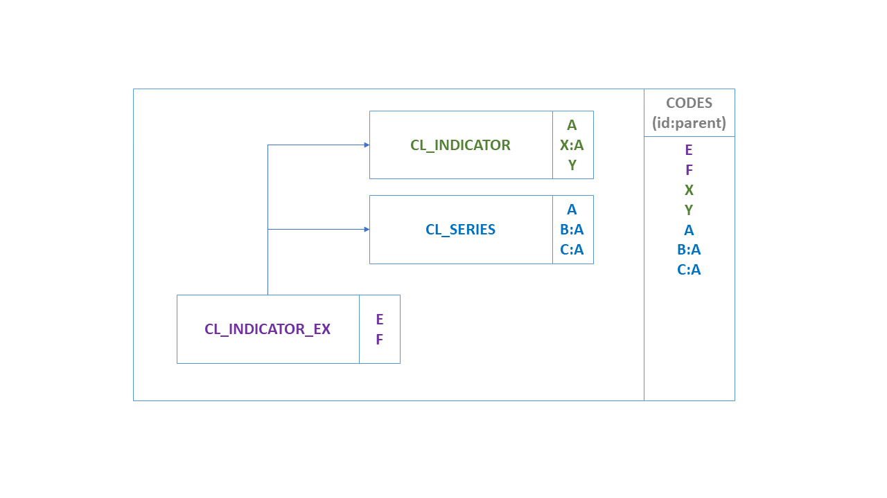
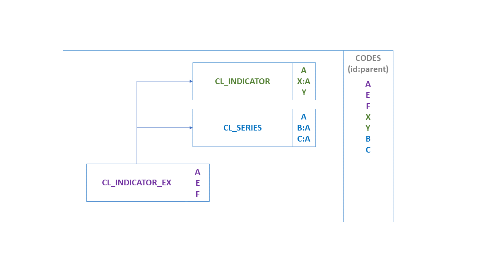
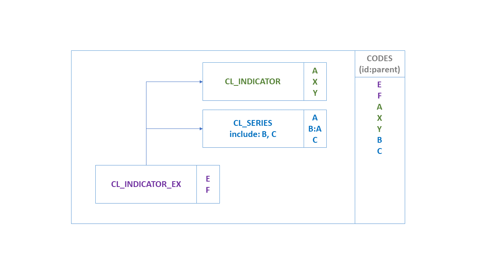
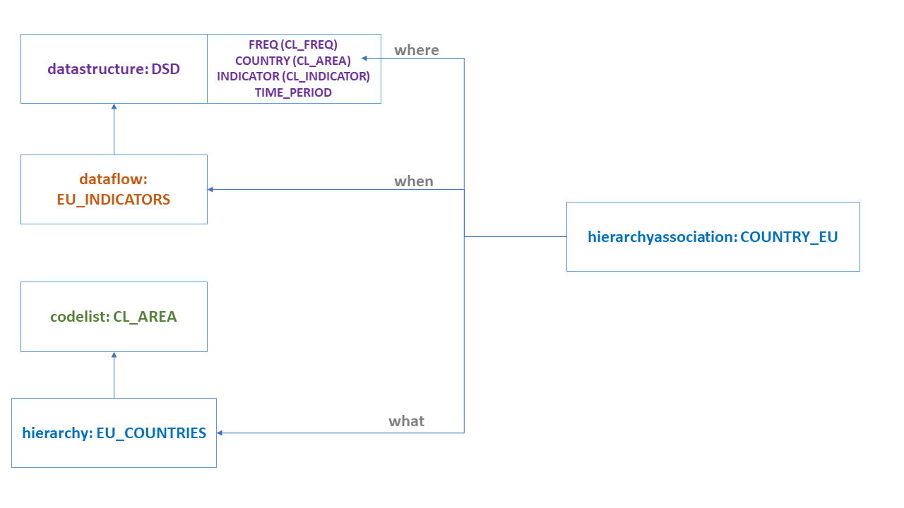

Codelist¶
As of SDMX 3.0, Codelists have gained new features like geospatial properties, inheritance and extension. Moreover, hierarchies (used to build complex hierarchies of one or more Codelists) are now linked to other Artefacts in order to facilitate the formers’ usage in dissemination or other scenarios. For all geospatial related features, as well as the new Geographical Codelist, please refer to section 7.
Codelist extension and discriminated unions¶
A Codelist can extend one or more Codelists. Codelist extensions are
defined as a list of references to parent Codelists. The order of the
references is important when it comes to conflict resolution on Code
Ids. When two Codelists have the same Code Id, the Codelist referenced
later takes priority. In the example below, the code 'A', exists in both
CL_INDICATOR and CL_SERIES. The Codelist CL_INDICATOR_EX will
contain the code ‘A’ from CL_SERIES as this was the second Codelist to
be referenced in the sequence of references.

Figure 7. Codelist extension
As the extended Codelist, CL_INDICATOR_EX in this example, may also
define its own Codes, these take the ultimate priority over any
referenced Codelists. If CL_INDICATOR_EX defines Code 'A', then this
will be used instead of Code 'A' from CL_INDICATOR and CL_SERIES, as
shown below:

Figure 8. Codelist extension with new Codes
Prefixing Code Ids¶
A reference to a Codelist may contain a prefix. If a prefix is provided,
this prefix will be applied to all the codes in the Codelist before they
are imported into the extended Codelist. Following the above example if
the CL_SERIES reference includes a prefix of 'SER_' then the resulting
Codelist would contain 7 codes, A, E, F, X, Y, SER_A, SER_B, SER_C.

Figure 9. Extended Codelist with prefix
Including / Excluding Specific Codes¶
The default behaviour of extending another Codelist is to import all
Codes. However, an explicit list of Code Ids may be provided for
explicit inclusion or exclusion. This list of Ids may contain wildcards
using the same notation as Constraints (%). Cascading values is also
supported using the same syntax as the Constraints. The list of Ids is
either a list of excluded items, or included items, exclusion and
inclusion is not supported against a single Codelist.

Figure 10. Extended Codelist with include/exclude terms
Parent Ids¶
Parent Ids are preserved in the extended Codelist if they can be. If a
Code is inherited but its parent Code is excluded, then the Code’s
parent Id will be removed. This rule is also true if the parent Code is
excluded because it is overwritten by another Code with the same Id from
another Codelist. This ensures the parent Ids do not inadvertently link
to Codes originating from different Codelists, and also prevents
circular references from occurring.

Figure 11. Parent Code included

Figure 12. Parent Code from different extended Codelist

Figure 13. Parent Code overridden by local Code

Figure 14. Parent Code not included
Discriminated Unions¶
A common use case solved in SDMX 3.0 is that of discriminated unions,
i.e., dealing with classification or breakdown “variants” which are all
valid but mutually exclusive. For example, there are many versions of
the international classification for economic activities "ISIC". In
SDMX, classifications are enumerated concepts, normally modelled as
dimensions corresponding to breakdowns. Each enumerated concept is
associated to one and only one code list.
To support this use case, the following have to be considered:
- Independent Codelists per variant: Having each variant in a
separate
Codelistfacilitates the maintenance and allows keeping the original codes, even if different versions of the classification have the same code for different concepts. For example, in ISIC Rev. 4 the code"A"represents"Agriculture, forestry and fishing", while in ISIC 3.1"A"means"Agriculture, hunting and forestry". - Prefixing Code Ids: When extending Codelists, the reference to
an extension
Codelistmay contain a prefix. If a prefix is provided, this prefix will be applied to all the codes in theCodelistbefore they are imported into the extendedCodelist. In this case, the reference toCL_ISIC4includes a prefix of"ISIC4_"and the reference toISIC3includes"ISIC3_", so the resultingCodelistwill have no conflict for the"A"items which will become"ISIC3_A"and"ISIC4_A". - Including / Excluding Specific Codes: As explained above, there
will be independent DFs/PAs with specific
Constraintattached, in order to keep the proper items according to the variant in use by each data provider.
For example, assuming:
- DSD
DSD_EXDUcontains a Dimension:ACTIVITYenumerated byCL_ACTIVITY. CL_ACTIVITYhas no items and is extended by:CL_ISIC4,prefix="ISIC4_"CL_ISIC3,prefix="ISIC3_"CL_NACE2,prefix="NACE2_"CL_AGGR,prefix="AGGR_"- Dataflow
DF1, with aDataConstraintCC_NACE2,CubeRegionforACTIVITYandValue="NACE2_%" - Dataflow
DF2, with aDataConstraintCC_ISIC3,CubeRegionforACTIVITYandValue="ISIC3_%" - Dataflow
DF3, with aDataConstraintCC_ISIC4,CubeRegionforACTIVITYandValue="ISIC4_%", Value="AGGR_TOTAL", Value="AGGR_Z"
The discriminated unions are achieved, by requesting any of the above
Dataflows with references="all" and detail="referencepartial": returns
CL_ACTIVITY with the corresponding extensions resolved and the
DataConstraint, referencing the Dataflow, applied. Thus, the
CL_ACTIVITY will only include Codes prefixed according to the Dataflow,
i.e.:
- Prefix
"NACE2_%"forDF1; - Prefix
"ISIC3_%"forDF2; - Prefix
"ISIC4_%"forDF3; note that Codes"AGGR_TOTAL"and"AGGR_Z"are also included in this case.
Linking Hierarchies¶
To facilitate the usage of Hierarchy within other SDMX Artefacts, the
HierarchyAssociation is defined to link any Hierarchy with any
IdentifiableArtefact within a specific context.
The HierarchyAssociation is a simple Artefact operating like a
Categorisation. The former specifies three references:
- The link to a
Hierarchy; - The link to the
IdentifiableArtefactthat theHierarchyis linked (e.g., a Dimension); - The link to the context that the linking is taking place (e.g., a DSD).
As an example, let’s assume:
- A DSD with a
COUNTRYDimension that usesCodelistCL_AREAas representation. - A
Hierarchy(e.g.,EU_COUNTRIES) that builds a hierarchy for theCL_AREACodelist. - In order to use this Hierarchy for data of a Dataflow (e.g.,
EU_INDICATORS), we need to build the followingHierarchyAssociation: - Links to the Hierarchy
EU_COUNTRIES(what is associated?) - Links to the Dimension
COUNTRY(where is it associated?) - Links to the context: Dataflow
EU_INDICATORS(when is it associated?) - The above are also shown in the schematic below:

Figure 15. Hierarchy Association